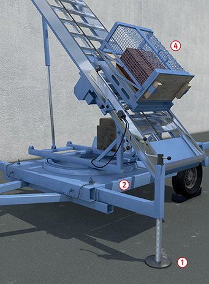
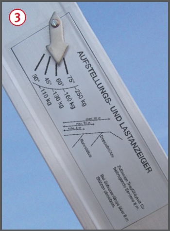
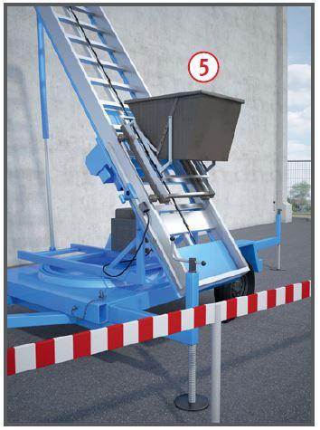
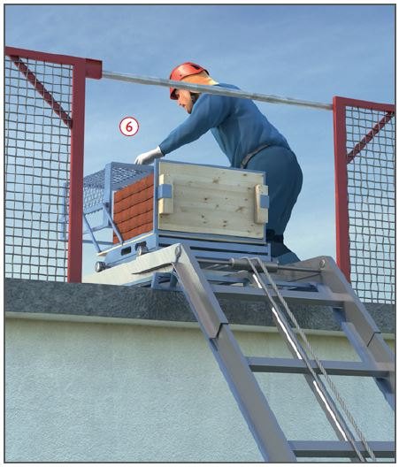

Gefährdungen
- Fehlende Sicherungsmaßnahmen
bei der Montage bzw. Demontage
des Aufzuges sowie
mangelhafte Absturzsicherung
an den hochgelegenen Ladestellen
können zu Absturzunfällen
führen.
- Außerdem kann es zu
Verletzungen durch herabfallende
Gegenstände kommen.
Schutzmaßnahmen
Aufstellung
- Aufzug standsicher nach den
Vorgaben der Betriebsanleitung
aufstellen: Fahrwerk durch Herausdrehen
der Spindeln entlasten
 und Grundrahmen
und Grundrahmen  horizontal ausrichten. Anlegeaufzüge
ohne Fahrwerk am Aufstellplatz
unverschiebbar festlegen.
horizontal ausrichten. Anlegeaufzüge
ohne Fahrwerk am Aufstellplatz
unverschiebbar festlegen.
- Zulässige Höchstlast gemäß
Belastungsanzeige einhalten
 .
.
- Flach geneigte Aufzugsfahrbahnen
gemäß der Betriebsanleitung
abstützen.



Betrieb
- Für den elektrischen Anschluss
des Aufzuges nur einen besonderen
Speisepunkt verwenden,
z. B. Baustromverteiler mit
Fehlerstrom-Schutzeinrichtung
(RCD).
- Nur geeignete Lastaufnahmemittel
verwenden, z. B. Ziegelpritsche
 , Kippkübel
, Kippkübel  , Eimerträger.
Lastaufnahmemittel für
lose Lasten wie z. B. Dachziegel
müssen umwehrt sein; Öffnungsweiten
maximal 5 cm x 5 cm.
, Eimerträger.
Lastaufnahmemittel für
lose Lasten wie z. B. Dachziegel
müssen umwehrt sein; Öffnungsweiten
maximal 5 cm x 5 cm.
- Schlaffseilbildung vermeiden.
- Das Befördern von Personen
mit der Last oder dem Lastaufnahmemittel sowie die
Benutzung der Fahrbahn als
"Leiter" sind verboten.
Obere Ladestelle
- Liegt die Abnahmestelle höher
als 2,00 m, sind Absturzsicherungen
vorzusehen.
- Wird die
Fahrbahn bis auf das Dach
geführt, darf die vorhandene
Dachfangwand nur für die Durchfahrt
des Lastaufnahmemittels
unterbrochen sein
 .
.
- Wird der
Aufzug nicht benutzt, ist die
unterbrochene Dachfangwand
zu schließen. Besser ist es, die
Fahrbahn des Aufzuges über die
nicht unterbrochene Dachfangwand
hinwegzuführen.
Untere Ladestelle
- Bereich der unteren Ladestelle
absperren (ausgenommen:
Zugang).
Prüfungen
- Art, Umfang und Fristen erforderlicher Prüfungen festlegen
(Gefährdungsbeurteilung) und
einhalten, z. B.:
- vor Inbetriebnahme am jeweiligen
Einsatzort (Aufstellung)
durch fachkundige Person,
- entsprechend den Einsatzbedingungen nach Bedarf,
mind. 1 x jährlich durch eine
"zur Prüfüng befähigte Person" (z. B. Sachkundiger).
- Ergebnisse der regelmäßigen
Prüfung durch die "zur Prüfung befähigte Person" dokumentieren.
07/2021